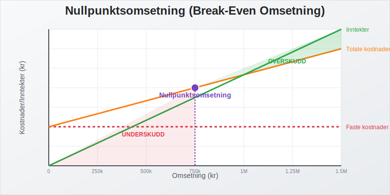
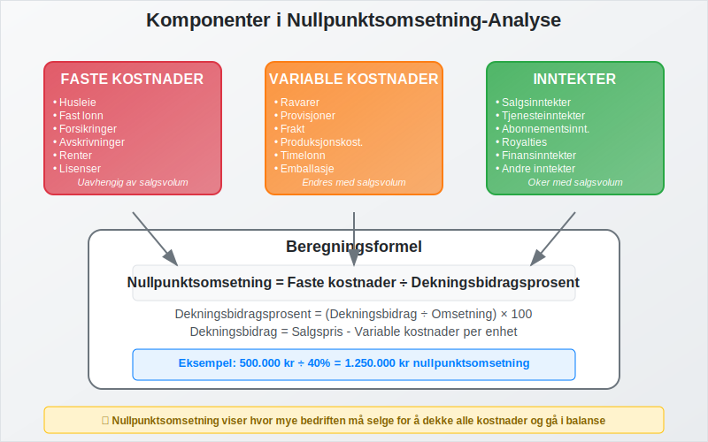
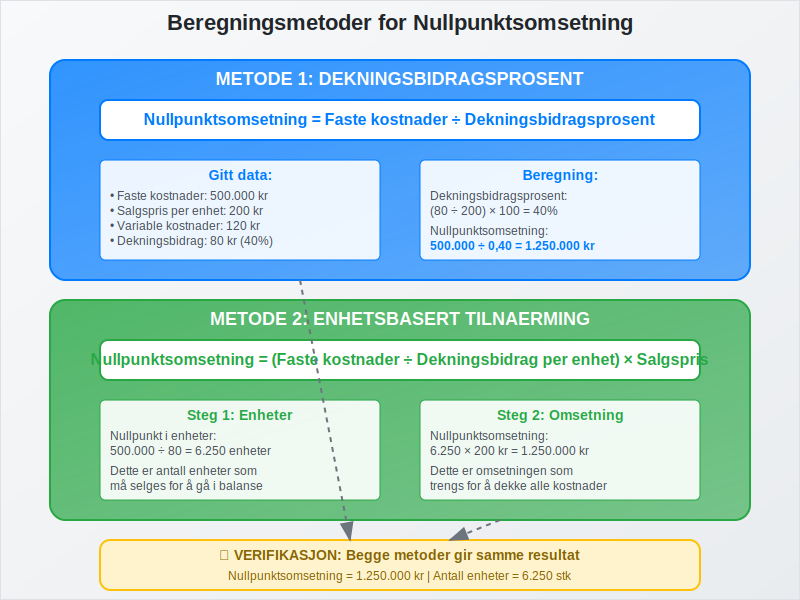
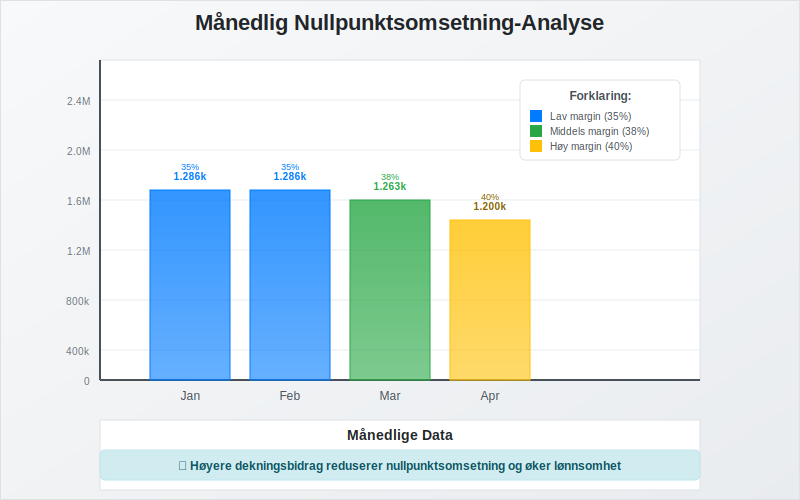
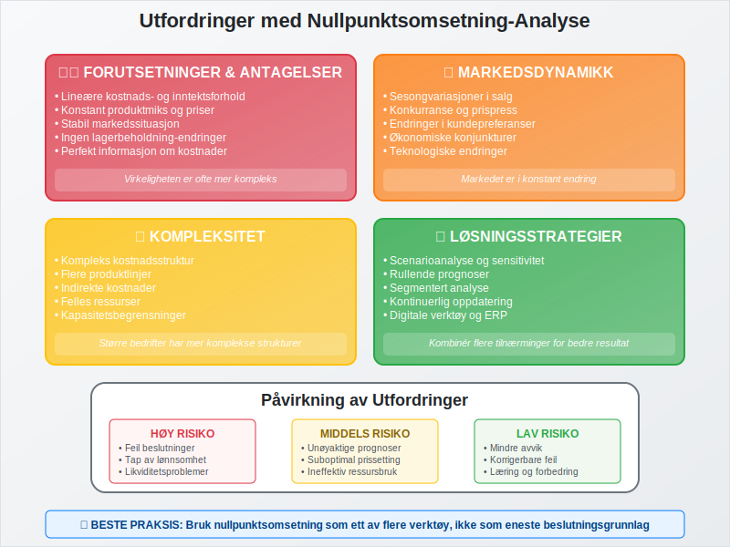
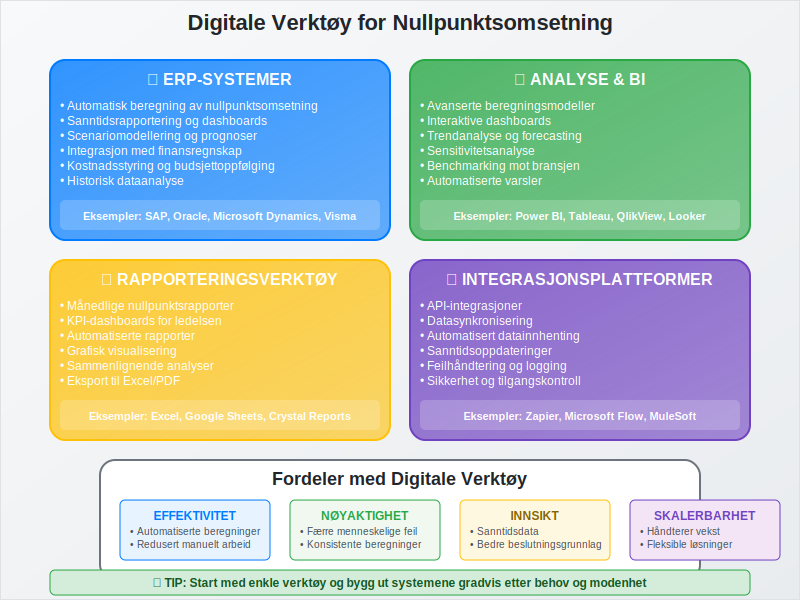

Nullpunktsomsetning er den kritiske omsetningen (salgsvolum i kroner) som en bedrift må oppnå for å dekke alle sine kostnader og gå i balanse. Dette er et fundamentalt konsept innen regnskap og økonomisk planlegging som hjelper bedrifter med å forstå hvor mye de må selge for å unngå tap og begynne å generere overskudd.

Hva er Nullpunktsomsetning?
Nullpunktsomsetning, også kjent som break-even omsetning, er det eksakte omsetningsnivået hvor:
- Totale inntekter = Totale kostnader
- Resultat = 0 (verken overskudd eller underskudd)
- Bedriften har dekket alle sine faste og variable kostnader
- Grunnlaget for lønnsomhetsvurdering og videre vekst er etablert
Dette skiller seg fra nullpunkt-analyse ved at det fokuserer spesifikt på omsetningsvolum i kroner fremfor antall enheter.
Betydning for Bedriftsledelse
Nullpunktsomsetning er kritisk for:
- Salgsplanlegging og målsetting
- Budsjettering og finansiering
- Prisstrategier og markedsposisjonering
- Investeringsbeslutninger og arbeidskapital-styring
- Risikovurdering og likviditetsstyring

Beregning av Nullpunktsomsetning
Det finnes flere metoder for å beregne nullpunktsomsetning, avhengig av tilgjengelig informasjon og bedriftens struktur.
Metode 1: Dekningsbidragsprosent
Formel:
Nullpunktsomsetning = Faste kostnader ÷ Dekningsbidragsprosent
Hvor:
- Dekningsbidragsprosent = (Dekningsbidrag ÷ Omsetning) × 100
Praktisk eksempel:
| Parameter | Verdi |
|---|---|
| Totale faste kostnader | 500.000 kr |
| Gjennomsnittlig salgspris per enhet | 200 kr |
| Variable kostnader per enhet | 120 kr |
| Dekningsbidrag per enhet | 80 kr |
| Dekningsbidragsprosent | 40% |
Beregning:
- Nullpunktsomsetning = 500.000 ÷ 0,40 = 1.250.000 kr
- Antall enheter som må selges = 1.250.000 ÷ 200 = 6.250 enheter
Metode 2: Enhetsbasert Tilnærming
Formel:
Nullpunktsomsetning = (Faste kostnader ÷ Dekningsbidrag per enhet) × Salgspris per enhet
Fortsettelse av eksemplet:
- Nullpunkt i enheter = 500.000 ÷ 80 = 6.250 enheter
- Nullpunktsomsetning = 6.250 × 200 = 1.250.000 kr

Faktorer som Påvirker Nullpunktsomsetning
Kostnadsstruktur
Faste kostnader som påvirker nullpunktsomsetning:
- Husleie og eiendomskostnader
- Lønn til fast ansatte
- Forsikringer og avgifter
- Avskrivninger på anleggsmidler
- Renter på lån og leverandørgjeld
Variable kostnader som påvirker dekningsbidraget:
- Råvarer og materialkostnader
- Provisjoner og salgskostnader
- Frakt og logistikk
- Produksjonskostnader knyttet til volum
Prissetting og Markedsforhold
Nullpunktsomsetning påvirkes direkte av:
- Salgspriser og prisstrategier
- Markedskonkurranse og prispress
- Produktmiks og avanse
- Sesongvariasjoner i salg
- Kundesegmentering og betalingsevne
Praktiske Anvendelser
Salgsplanlegging og Målsetting
Nullpunktsomsetning brukes til å:
- Sette realistiske salgsmål for salgsorganisasjonen
- Planlegge markedsføringsinvesteringer og kampanjer
- Vurdere nye markeder og kundesegmenter
- Optimalisere produktporteføljen basert på dekningsbidrag
Budsjettering og Prognoser
Månedlig nullpunktsomsetning:
| Måned | Faste kostnader | Dekningsbidrag% | Nullpunktsomsetning |
|---|---|---|---|
| Januar | 450.000 kr | 35% | 1.285.714 kr |
| Februar | 450.000 kr | 35% | 1.285.714 kr |
| Mars | 480.000 kr | 38% | 1.263.158 kr |
| April | 480.000 kr | 40% | 1.200.000 kr |

Scenarioanalyse
Påvirkning av endringer:
| Scenario | Endring | Ny nullpunktsomsetning | Effekt |
|---|---|---|---|
| Basis | - | 1.250.000 kr | - |
| Prisøkning 10% | +10% salgspris | 1.136.364 kr | -9,1% |
| Kostnadsreduksjon | -50.000 kr faste kostnader | 1.125.000 kr | -10,0% |
| Effektivisering | +5% dekningsbidrag% | 1.111.111 kr | -11,1% |
Begrensninger og Utfordringer
Forutsetninger og Antagelser
Nullpunktsomsetning-analyse baserer seg på flere forutsetninger:
- Lineære kostnads- og inntektsforhold
- Konstant produktmiks og priser
- Stabil markedssituasjon
- Ingen lagerbeholdning-endringer
Praktiske Utfordringer
- Kompleks kostnadsstruktur i større bedrifter
- Sesongvariasjoner og markedssvingninger
- Produktmiks-endringer over tid
- Konkurranse og prispress

Optimalisering av Nullpunktsomsetning
Strategier for Reduksjon
Redusere faste kostnader:
- Reforhandle leieavtaler og leverandørkontrakter
- Automatisering og effektivisering av prosesser
- Outsourcing av ikke-kritiske funksjoner
- Optimalisering av anleggsmidler
Øke dekningsbidraget:
- Prisoptimalisering basert på verdi
- Produktutvikling med høyere marginer
- Kostnadsreduksjon i produksjon og innkjøp
- Forbedret leverandørreskontro
Langsiktige Strategier
- Investering i teknologi og innovasjon
- Markedsutvikling og kundelojalitet
- Skalering av forretningsmodellen
- Diversifisering av inntektsstrømmer
Sammenheng med Andre Nøkkeltall
Lønnsomhetsanalyse
Nullpunktsomsetning er grunnlaget for:
- Bruttofortjeneste-analyse
- Driftsresultat-vurdering
- Avkastning-beregninger
- Egenkapitalrentabilitet
Finansiell Planlegging
Integrering med:
Digitale Verktøy og Systemer
ERP-Integrasjon
Moderne ERP-systemer tilbyr:
- Automatisk beregning av nullpunktsomsetning
- Sanntidsrapportering og dashboards
- Scenariomodellering og prognoser
- Integrasjon med finansregnskap
Rapportering og Analyse
- Månedlige nullpunktsrapporter
- Trendanalyse og historiske data
- Benchmarking mot bransjen
- KPI-dashboards for ledelsen

Juridiske og Regnskapsmessige Aspekter
Regnskapsstandarder
Nullpunktsomsetning-analyse må følge:
- Bokføringsloven
- God regnskapsskikk
- Norsk RegnskapsStandard (NRS)
- Internasjonale standarder for større selskaper
Dokumentasjon og Revisjon
- Dokumentasjon av beregningsmetoder
- Attestering av forutsetninger
- Revisjonsbevis og kontrollspor
- Intern kontroll og kvalitetssikring
Konklusjon
Nullpunktsomsetning er et kritisk verktøy for enhver bedrift som ønsker å forstå sin lønnsomhetsterskel og planlegge for bærekraftig vekst. Ved å beherske beregning og analyse av nullpunktsomsetning kan bedrifter:
- Sette realistiske salgsmål og budsjetter
- Optimalisere kostnadsstrukturen for bedre lønnsomhet
- Ta informerte beslutninger om prissetting og investeringer
- Redusere finansiell risiko gjennom bedre planlegging
Kombinert med andre regnskapsverktøy som dekningsbidrag-analyse, kontantstrømanalyse og likviditetsstyring, gir nullpunktsomsetning-analyse et solid grunnlag for strategisk bedriftsledelse og finansiell planlegging.
For bedrifter som ønsker å implementere systematisk nullpunktsomsetning-analyse, anbefales det å starte med enkle beregninger og gradvis bygge ut med mer sofistikerte verktøy og ERP-integrasjon etter hvert som organisasjonen modnes.